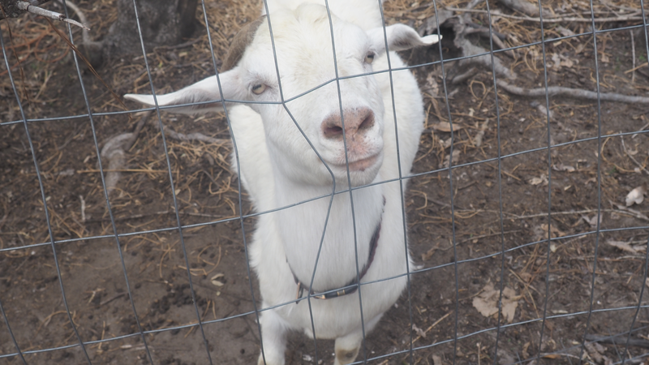
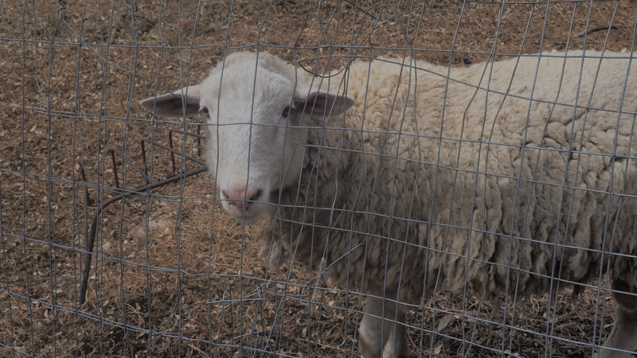
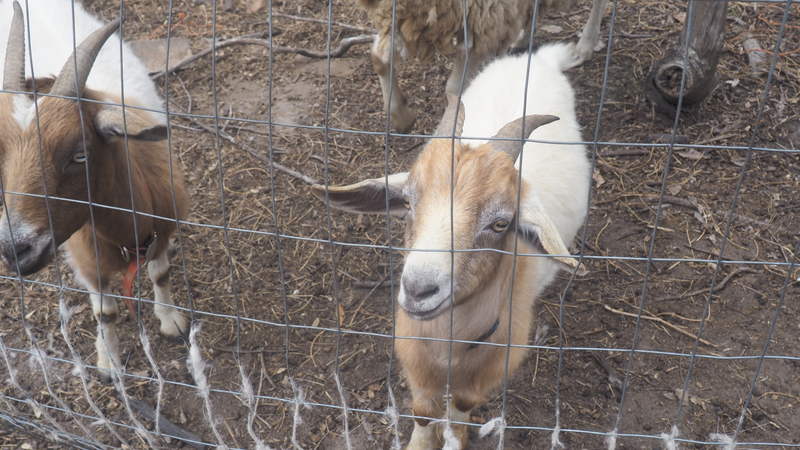

Walking The Narrow Road

JAM Mission exists to honor God by stewarding His creation, serving our community, and offering a place of refuge, learning, and connection. We believe the land was given to us not just to cultivate, but to share—with strangers, neighbors, and anyone seeking rest for their soul.
Our Biblical Foundation
Everything we do at JAM Mission is rooted in Scripture. God first placed humanity in a garden (Genesis 2:8-9) and called us to work and care for it. He instructed us to build houses, settle down, and plant gardens (Jeremiah 29:5). He told us to welcome strangers as we would welcome ourselves (Leviticus 19:33-34). These aren't just verses to us—they are the blueprint for how we live and serve.
What Drives Us
We are driven by the belief that connection with the land, with animals, and with community is essential to human flourishing. In a world that moves too fast, JAM Mission is a place to slow down. To plant something. To feed an animal. To sit by a creek and listen. To remember that the narrow road, while harder, leads to life.
Our Vision



We envision JAM Mission as a thriving, self-sustaining farm community where visitors of all ages and backgrounds can experience the abundance of God's creation. From food forests and greenhouses to therapy programs and family camp weekends, every part of our property is designed to heal, teach, and inspire.
Our Values
Faith First — God's Word guides every decision we make, from how we treat our animals to how we welcome our guests.
Stewardship — We care for this land as a gift entrusted to us, using sustainable practices that honor creation.
Hospitality — Every guest is treated like family. You are welcome here, always.
Community — We grow stronger together. Through workshops, events, and shared meals, we build relationships that last.
Healing — Through animals, gardens, and nature, we offer spaces where bodies, minds, and spirits can find rest.